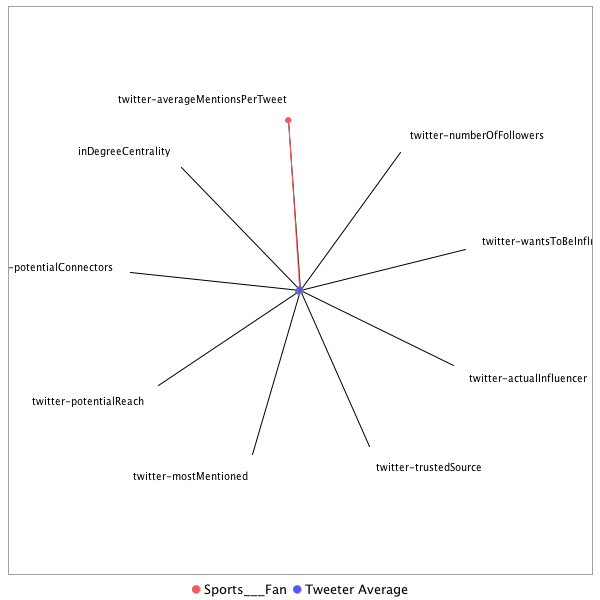

This tweeter has been identified as an influencer. Its target audience and hashtag and word usage are analyzed below.
Basic Statistics
Number of direct followers 483 The peak number of followers that the tweeter had during any time period. Number of retweeters 1 Number of agents that retweeted the key influencer. Number of secondary followers 8126 The sum of the followers of those who retweeted the key influencer. Measure Values of Other Influencers node versus Tweeter Average
This compares the measure values of the key influencer with the average values across all tweeters. For each measure line, the center-point means zero and the end-point means the maximum score across all tweeters.

Where was the influencer?
The agent is not recorded as being in any locations. Either he tweeted without geo-tags or we have no information about the tweets he sent.
The agent and its resenders are not recorded as being in any locations. Either they tweeted without geo-tags, or we have no information about the tweets they sent.
What hashtags did the influencer use?
This displays the top ranked hashtags that the influencer and its retweeters used.
Rank hashtag Count 1 VILMMCD 16 2 ComeyDay 12 3 MMCD 12 4 sb4 11 5 Comey 7 6 PuertoRico 3 7 Venezuela 3 8 InductTomFlores 2 9 Mexico 2 10 PFHOF18 2 11 diversity 2 12 journalism 2 13 Aztec 1 14 DACA 1 15 FIFA 1 16 FaithActionID 1 17 FathersDay 1 18 Indy500 1 19 InspiringAmerica 1 20 Latinos 1 21 MalcolmX 1 22 OscarLopezRivera 1 23 ParisAgreement 1 24 Pride30 1 25 PrideMonth 1 26 SB 1 27 TheHillLatina 1 28 WonderWoman 1 29 immigration 1 30 media 1 31 racism 1 Tweet List
This displays all of the tweets of the influencer ordered from earliest to latest. Click on a tweet to see its status in Twitter.
Number Tweet ID Date Message 1 872113097678483457 2017-06-06 11:29:00-04 @GazetteReview @LULAC @MALDEF @HHFoundation @JMurguia_NCLR @AP @Maricela_Huerta @MaritzaHuertaPR @primo1elite @DashOfNews @PGutierrezESPN @georgelopez @LopezOnSports @LatinasInSports @PJC_Raiders @JeffGarciaJGFA @ProFootballHOF @NAACP @CornellWBrooks @NCLR @BrentWilkes @HugoBalta @mbretosESPN @mbmusic_Mike @lginn @AmyTrask @NFLMAVERICK @TaylorBlitzTime @JessiLosadaTV @Jerrymcd @GinnandTopics @W2BDreMontez @DMorin1 @JohnDiazChron @OrtizKicks @ricknajera @CadChica @fhinojosa71 @Latinohistory @RaiderACE562 @RaiderRamble @GonzalesT956 @Obee1ne @NatlPresLULAC @CruzPedregon @TonyPedregon @Rays_Sports @LatinoVoices @SuzGamboa @briskwalk 2007 MUST READ Tom Flores G8T read must not fall on deaf ears turns 81yrsold for #PFHOF18 Induction #InductTomFlores https://t.co/XAAlXTreCk